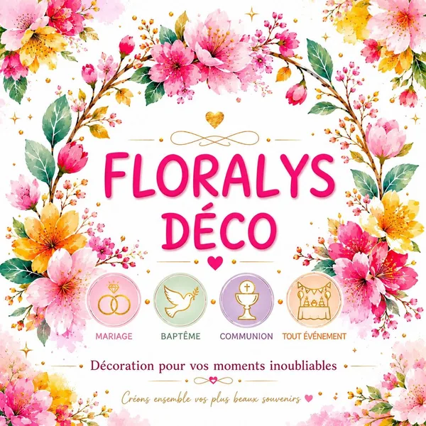
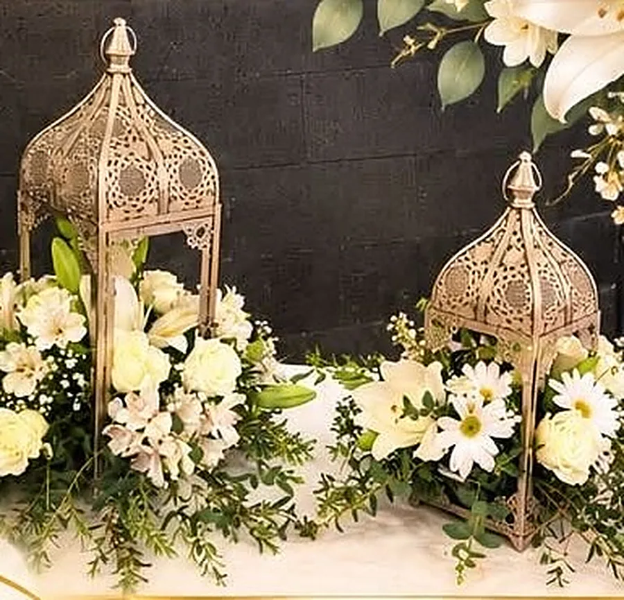
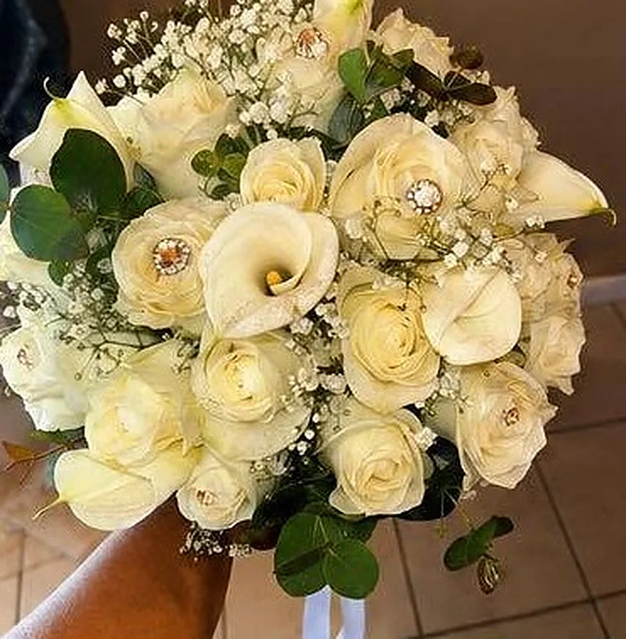
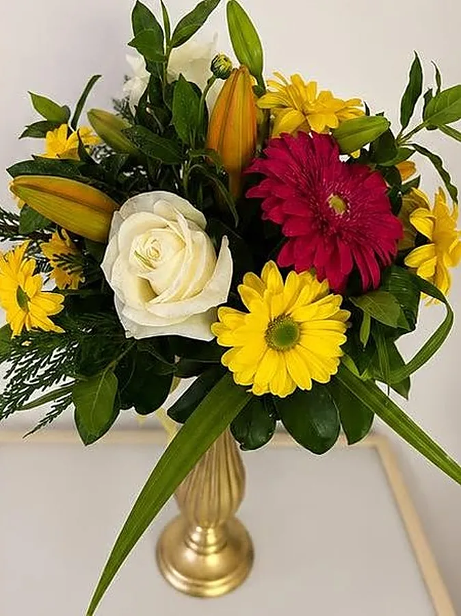
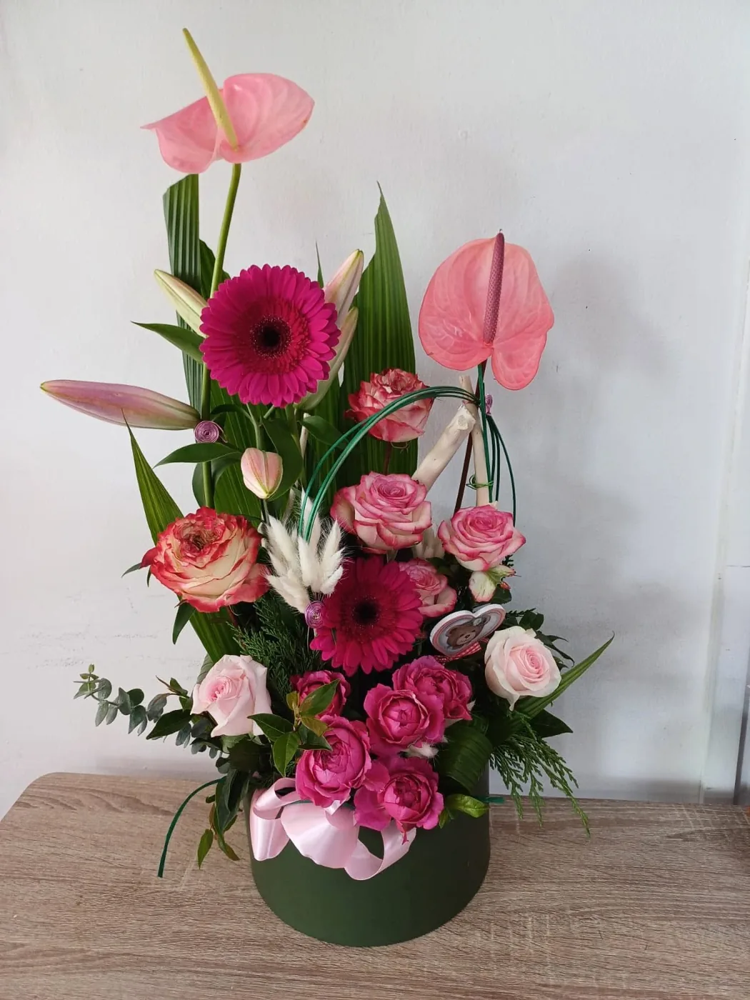
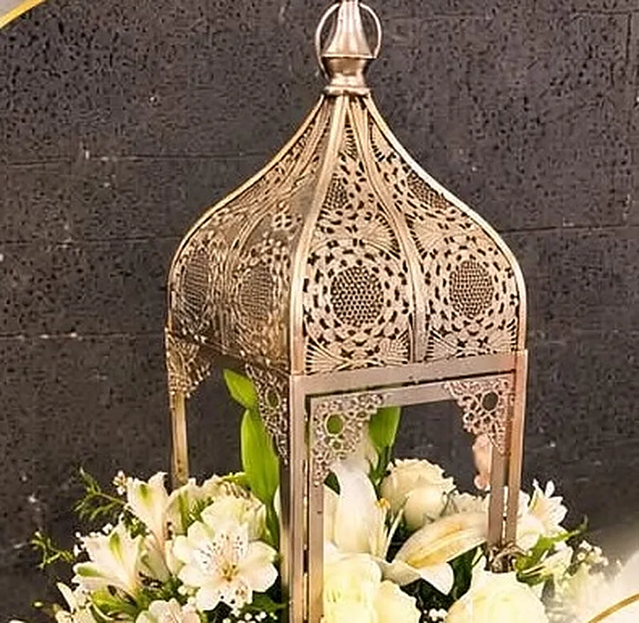
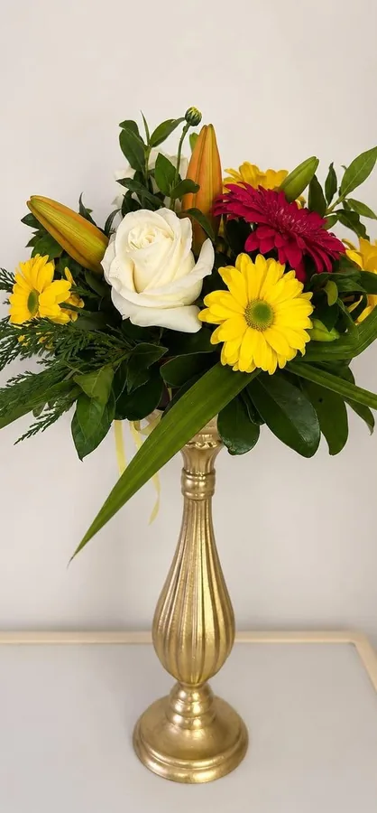
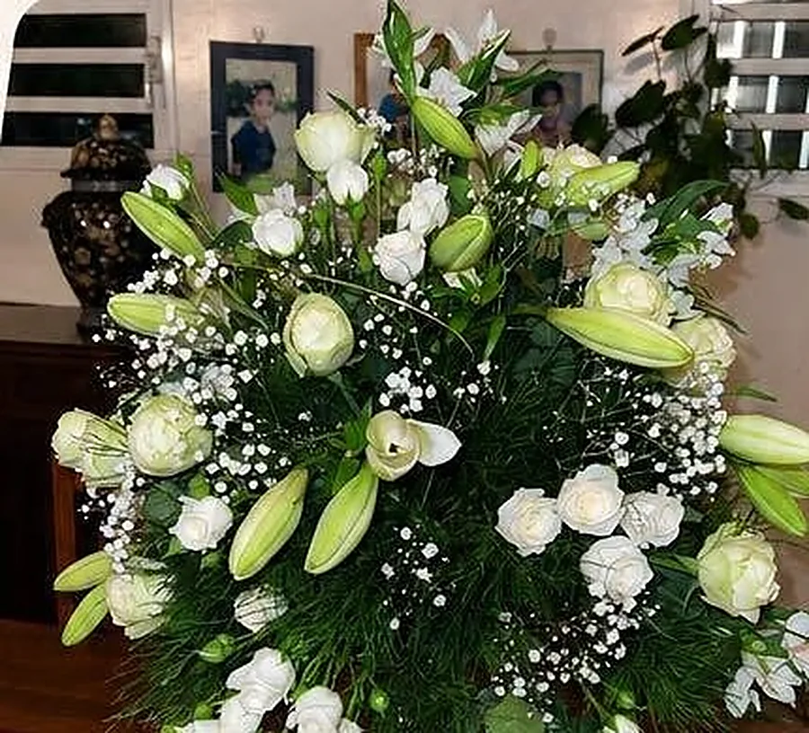
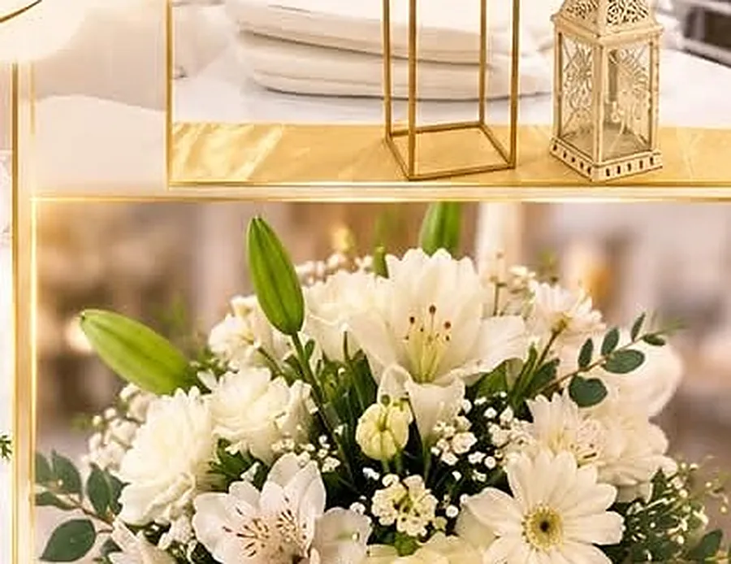
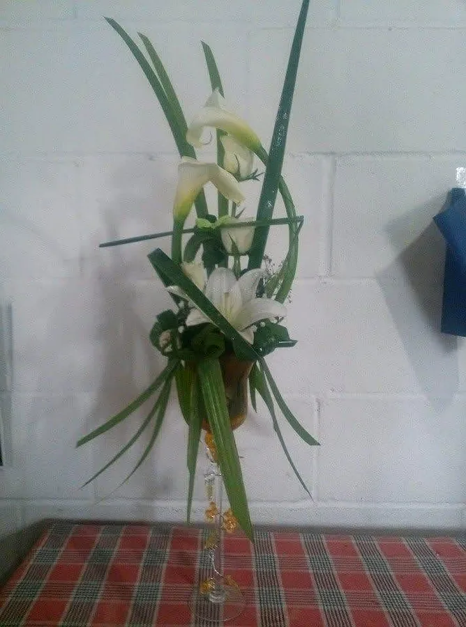

Bouquets de mariée
Bouquets de mariée personnalisés et boutonnières : « le bouquet qui raconte votre histoire ».

Bouquets de mariée, compositions florales et décoration de mariages, baptêmes, communions, anniversaires… imaginés avec passion à Sainte-Anne, Saint-Benoît.

Avec passion, créativité et savoir-faire, Floralys Déco vous accompagne dans tous les événements qui comptent : mariages, baptêmes, communions, anniversaires et toutes vos réceptions. Chaque création est réalisée avec passion, soin et créativité, sur mesure selon vos envies et votre thème.
Bouquets de mariée personnalisés et boutonnières : « le bouquet qui raconte votre histoire ».
Compositions et bouquets de fleurs fraîches, élégants et uniques, pour chaque moment.
Pour vos anniversaires, mariages tamouls, cérémonies traditionnelles et réceptions, dans le respect des traditions qui vous tiennent à cœur.
Mariages, baptêmes, communions, anniversaires et toutes vos réceptions : une touche d’élégance, d’émotion et de raffinement.
Intervention sur toute l’île de La Réunion · Livraison possible sur demande.

« Chaque création est pensée avec soin pour apporter une touche d’élégance, d’émotion et de raffinement à vos moments les plus précieux. »

Des compositions florales sur mesure « alliant couleurs, fraîcheur et élégance pour mettre en valeur chaque instant de votre célébration ».






Réalisations publiées par Floralys Déco sur sa page Facebook · faites glisser pour voir la suite →
Un bouquet de fleurs fraîches ou une création sur mesure selon vos envies, à offrir à ceux que vous aimez : « Offrez des fleurs… Offrez des émotions. » Livraison possible sur demande.
Demander sur WhatsApp Message prérempli vers le 0693 20 08 23« Confiez-moi vos projets et transformons ensemble vos plus beaux instants en souvenirs inoubliables. »